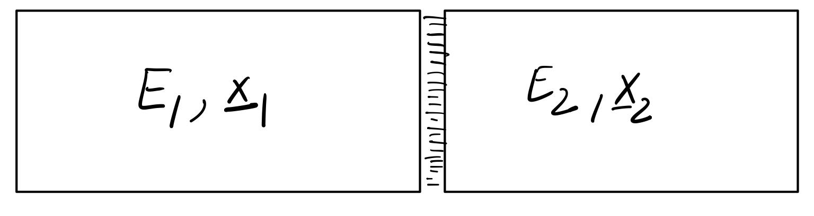
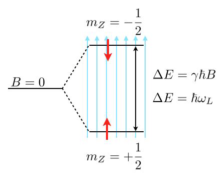

Classical statistical mechanics#
Kardar Ch. 4
We skipped Ch. 1 because Thermo is a prerequisite for this class, and its principles will soon be rederived from a molecular viewpoint
We also skipped Ch. 3, though some of it will come back before we venture into quantum stat mech
Why do we need statistical mechanics?
Fluctuations cause condensed matter systems to reside in a multitude of microstates, rather than adopting well defined internal energy minima,
The set of “typical” microstates of a large system is the thermal equilibrium. Once kicked out of equilibrium, a large system quickly settles back into the same set of microstates.
The description of large systems at thermal equilibrium is the focus of equilibrium statistical physics.
Note that living systems consume energy to drive irreversible processes and stay away from thermal equilibrium. Nevertheless, they often show seemingly random fluctuations that can even dominate their behavior. It is active topic research how to extend statistical mechanics to describe such active systems far from equilibrium.
Closed systems – microcanonical ensemble#
Basic principle of statistical mechanics: In an isolated system, all allowed microstates are equally likely.
An “isolated” system does not transfer energy, matter, volume or other conserved quantities outside its boundaries. A “closed” system can exchange energy, but not matter. “Open” systems typically exchange energy, matter and volume. Example: Biological systems (cells, organisms).
In classical physics (=all we care for now), a “microstate” of a system of \(N\) particles is a specific point \(\mu=\{\vec r, \vec p\}\) in \(6N\)–dimensional phase space. It described the positions \(\vec r\) and momenta \(\vec p\) of all particles of the system.
All “allowed” microstates have the same energy and generalized coordinates \(\mathbf{x}\), which for a particle system typically consist of the volume of the container and the number of particles, i.e. \(\mathbf{x}=(V,N)\).
But the type of generalized coordinates we have to consider depends on the problem.
If the system consists of different particle types, we need \(\mathbf{x}=(V,N_1,N_2, \dots)\).
If we consider magnets, the total magnetization \(M\) is included
If we consider polymers, the length \(L\) of the polymer is used.
generalized coordinates are always extensive!

Then, we can mathematize the basic principle by stating that the equilibrium distribution \(P_{E,\mathbf{x}}(\mu)\) to observe a particular state \(\mu\) is given by
where the normalization constant
characterizes the total number of microstates {\(\mu\)} with \(H(\mu)=E\) and \(\mathbf{x}_\mu=\mathbf{x}\).
Note that for discrete set of micro states, e.g., when discussing Ising spins \(\sigma_i=\pm 1\), replace the integral by a sum, \(\int d\mu\rightarrow \sum_{\mu}\), and the Dirac delta function by a Kronecker delta, \(\delta(E-H(\mu))\rightarrow \delta_{E,H(\mu)}\)
Ergodicity#
One can imagine measuring expectation values \(\langle f(\mu)\) in two ways: 1. Follow a given system for a very long time, and determine the time average of \(f\). 2. Determine the ensemble average of \(f\) over a very large number of system states drawn from the \(P_{E,\mathbf{x}}\). Our Basic Principles implies that, in the limit, both results give the same answer. Mathematically,
The celebrated ergodicity theorem explains why this equality and, thus, our Basic Principle, is to be expected for typical systems undergoing volume conserving Hamiltonian dynamics (see later in the course). Macroscopic systems, such as ferromagnetic systems below the Curie temperature, can demonstrate ergodicity breaking, where they do not explore all possible states as predicted by the ergodic hypothesis. This results in phenomena like spontaneous magnetization, a form of spontaneous symmetry breaking. Similarly, complex disordered systems like spin glasses and conventional glasses, like window glasses, exhibit more intricate forms of ergodicity breaking. These systems can appear solid over short timescales, like seconds or hours, due to their positive shear modulus, but over very long periods, like millennia, they behave more like liquids, displaying multiple time scales and intermediate plateaus in behavior.
Entropy#
We can also argue for the micro-canonical ensemble to be the most unbiased (maximum entropy) distribution subject to the constraints \(H(\mu)=E\) and \(\mathbf{x}_\mu=\mathbf{x}\). Recall that the entropy of a discrete probability distribution is \(S=-\sum_i P_i \ln(P_i)\), which is maximized for \(P_i=\)const.\(=\Omega^{-1}(E,\mathbf{x})\). In that case, \(S=\ln(\Omega(E,\mathbf{x}))\).
Historically, Boltzmann defined entropy to be the dimensionful quantity
with \({\rm k_B}\sim 1.38×10^{−23} {\rm J⋅K^{−1}}\).
Note
For a continuous phase space, \(\Omega\) is dimensionful. E.g. for an \(N\)-particle system, \(\Omega\) has units of phase space volume per energy,
To obtain a sensible definition of an absolute entropy, we should discretize phase space and energy to measure \(\Omega\) in some characteristic unit \([\hat \Omega]\), so that \(S={\rm k_B}\ln(\Omega/[\hat \Omega])\). That happens automatically in quantum mechanics, which provides natural units for phase space volume in terms of Planck’s constant (\(h^{3N}\)) and ensures that energy levels are discretized.
If we want to define an absolute entropy in classical statistical mechanics, Planck’s constant is often borrowed from quantum mechanics. However, normally, classical statistical mechanics only cares about entropy differences, \(S(E_1)-S(E_2)={\rm k_B}\ln(\Omega_1/\Omega_2)\), for which the discretization issue does not arise.
Thermal equilibrium#
Consider an isolated system \({\mu, E, \bf{x}}\) consisting of two subsystem in contact so that they can exchange energy,

N.B.:
E_1 and E_2 are extensive, they grow linearly with the subsystem sizes
the surface contribution is intensive if the interactions are local.
Therefore, the surface contribution is negligible as subsystem sizes are send to infinity (thermodynamic limit)
The probability of observing a particular state \(\mu\) of the compound system is, therefore, given by the microcanonical expression
where
(compound entropy)
\(S_{1}, S_{2}\) extensive and, so,
where \(s_1\) and \(s_2\) are entropies per particle, which approach a constant as we increase the system sizes.
Thus, as \(N \rightarrow \infty\), the integral in () is dominated by the maximum of the integrand, so that
where the position of the maximum is obtained by extremizing w.r.t. \(E_1\), resulting in
Employing the thermodynamic definition of temperature
the maximum \(E_1^{*}\) is set by
Note:
\(E_1\) (or \(E_2=E-E_1\)) adjusts itself so as to maximize \(S\).
When \(S\) is maximized, the temperature of both compartments are identical
Second law: If we prepare an initial condition where \(E_{1} \neq E_{1}^{*}\), by ergedicity \(E_{1} \rightarrow E_{1}^{*}\) at long times because \(E_{1}^{*}\) is much more likely (sketch). The entropy increases,
which, to first order in \(E_{1}^{*}-E_{1}=\delta E_{1}\), implies
i.e., \(T_2>T_1\) if \(\delta E_1>0\) and \(T_1>T_2\) if \(\delta E_1<0\).
Thus, energy always flows from hot to cold.
Stability: Since the point \(\left(E_{1}^{*} E_{2}^{*}\right)\) is a maximum of \(S\left(E_{1}^{*}\right)+S_{2}\left(E-E_{1}^{*}\right)\) we must have
Suppose both systems are identical, \(S_{1}=S_{2}\)
Also, since \(\left.\partial_{E} S\right|_{x}=T^{-1}\), we have \(\left.\frac{\partial E}{\partial T}\right|_{x} \geq 0\).
I.e., the specific heat \(C_{x}\equiv \left.\frac{\partial E}{\partial T}\right|_{x}\) is non-negative.
Work and First Law
Thus far, we kept the generalized coordinates fixed and studied the redistribution of energy. When we manipulate the generalized coordinates, we do work on the system.
To analyze this situation, consider first changing \(\bf{x}\to \bf{x}+\bf{\delta x}\) in a slow, reversible, manner. (I.e. we can return to the initial state by reversing the externally applied forces \(\bf{J}\).)
Then, the energy will change, \(E\to E+\bf{J} \cdot \bf{\delta x}\), and so
For a reversible dynamics, we must have the equal sign, i.e.
Thus, for a reversible transformation, the change in entropy becomes
which implies the first law of thermodynamics:
Energy exchange – canonical ensemble#
Most soft matter systems are closed but not isolated - they trade energy and volume with the environment (a.k.a. reservoir, bath, sorroundings). What can we say about \(P(\nu_s)\) in those cases?
The combination of System (index s) and Bath (index b) forms an isolated system with fixed \(E\), \(V\), \(N\). We can therefore apply our “Basic Principle” to conclude
All states with \(E_s+E_r=E\) are equally likely.
To reach a high energy state, s has to “steal” energy from b. What’s the probability \(P(\nu_s)\) of system state \(\nu_s\) irrespective of the state of the bath?
Note that the multiplicity of the bath alone controls the state of the system. I.e. the more states are available to the bath the more likely a given microstate of the system is. Energy exchange is important only in sofar as it modifies the number of states available to the bath and the system.
The multiplicity of microstates grows exponentially with its parameters. This can be most easily demonstrated for particle numbers (see example below) but generally holds also for energy and volume. Therefore, it makes sense to introduce the logarithm of the multiplicity. That’s what Ludwig Boltzmann did by introducing what’s now called the Boltzmann entropy: $\( S\equiv k_\mathrm{B} \ln \Omega \qquad k_\mathrm{B}=1.38064852 × 10^{-23} {\rm J/ K}.\)$
Using the Boltzmann entropy, we can write $\(P(\nu_s)\propto e^{k_\mathrm{B}^{-1}S_r(E-E_s)}.\)$ When the bath is very big (thermodynamic limit), we can Taylor expand the exponent,
Inserting above yields
The factor \(e^{-b E_s}\) is the Boltzmann factor, if we identify \(b\) and \(\beta_r\equiv (k_\mathrm{B} T_r)^{-1}\).
Thus,
Equivalently,
is the thermodynamic definition of the temperature of the bath.
Implication: The ratio of probabilities of two microstates is given by the ratio of their Boltzmann factors
Example: Barometric height formula.
Consider a constant gravitational force \(F=-mg\) along the \(z\)-direction such that the potential energy is given by \(E=mgz+E_0\) where \(E_0\) is the energy at ground level. For simplicity, we set \(E_0=0\).
The potential energy difference due to a height difference \(\Delta z\) is given by \(\Delta E = m g \Delta z\). Therefore, the ratio of the probabilities to find a particle at a given position compared to a position elevated by a height \(\Delta z\) is given by $\(\frac{P(\nu_s^{(1)})}{P(\nu_s^{(2)})}=\exp\left(-\frac{\Delta z}{\lambda}\right), \qquad \text{in terms of the "scale height"} \lambda\equiv \frac{k_B T}{m g}\approx 8 \text{km}.\)$ Thus, increasing your elevation by 8 km approximately leads to an e-fold reduction of the air density. (“approximately”, because (i) the temperature changes with height, (ii) molecules interact and (ii) the atmosphere is not in equilibrium).
So far, we just cared about ratios of probabilities. In general it is much harder to compute absolute probabilities, which requires computing a normalization constant – the partition function. In the present one-dimensional case, however, we can do it easily: The probability \(p(z)\) for finding the particle at position \(z\) is given by \(p(z)=\frac{1}{\lambda}\exp\left( -\frac{z}{\lambda}\right)\), which is properly normalized, \(\int_0^\infty p(z)=1\).
Example: Two-level-system
As another frequent application of Boltzmann’s law are state populations of two state systems, as we find them frequently in physics, e.g., for spin systems. Such two level spin systems are, for example, very important for nuclear magnetic resonance (NMR), which is an important tool to study the structure and dynamics of soft matter.

Consider the image above, where a single energy level at zero magnetic field (\(B=0\)) splits into two energy levels due to the interaction of a proton spin (red arrow) with the external magnetic field.
The magnetic moment of the proton spin may take two expectation values in the magnetic field, which are characterized by the magnetic quantum number \(m_Z=\pm 1/2\). The magnetic moment projected along the magnetic field direction is then
and the energy of the states
with \(\gamma=2.675222005\times 10^{8}\; \mathrm{s}^{-1} \mathrm{T}^{-1}\) being the gyromagnetic ratio of the proton. The energy difference for a nonzero magnetic field is therefore given by
which results for a magnetic field of \(B=1\; \mathrm{T}\) in \(\Delta E\approx 1.76\times 10^{-7}\;{\rm eV}\) or a Larmor frequency of \(\omega_\mathrm{L}=42\; {\rm MHz}\). This energy difference is almost negligible as compared to the thermal energy at room temperature \(k_\mathrm{B}T=2.6\times 10^{-2}\;{\rm eV}\). Yet, this small energy difference is used to give the contrast in NMR and related techniques such as MRI.
Using the Boltzmann distribution we can now calculate the ratio of the population of spins in the lower or excited state
which is very close to one:
If you consider now a volume of \(V=1\;{\rm {\mu m}}^3\) water, then you would roughly have about \(N=6.7\times 10^{19}\) protons. This then means that the excess number of protons in the excited state is just \(N_{+\frac{1}{2}}-N_{-\frac{1}{2}}=4.5\times 10^{12}\), which is extremely low. Thus, to detect something in NMR or MRI, a certain number of protons in the volume is required.